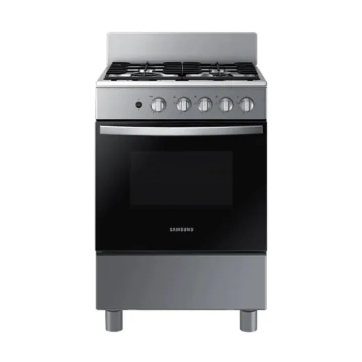
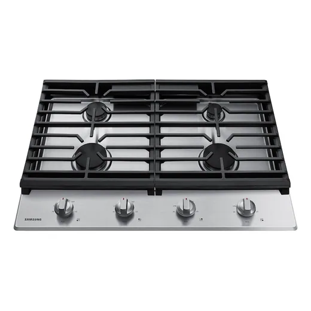
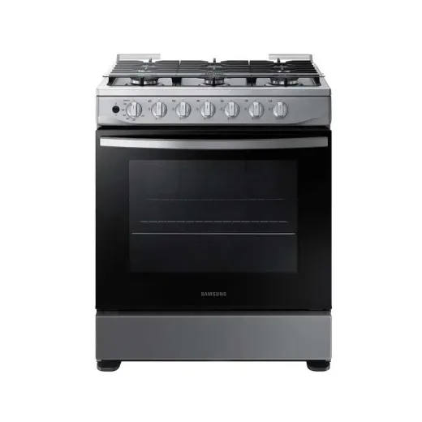
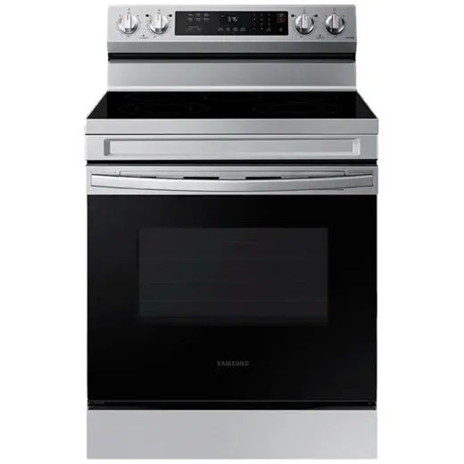

Samsung · Modelo NX24BG35411V
Estufa a Gas Samsung 24" 4 Quemadores · NX24BG35411V
L 6,890
Más barato en Diunsa · ahorras hasta L 1,109 frente a la tienda más cara
Precio en cada tienda
| Tienda | Precio | Antes | Disponibilidad | |
|---|---|---|---|---|
| Diunsa | L 6,890 | Disponible | Ver en tienda › | |
| Gallo más Gallo | L 6,995 | — | Disponible | Ver en tienda › |
| Lady Lee | L 7,499 | Disponible | Ver en tienda › | |
| Elektra | L 7,999 | Disponible | Ver en tienda › |
Precios referenciales tomados de cada tienda el 28 de noviembre de 2026. El precio válido es el que muestra la tienda al comprar.
Historial de precio
Lo seguimos desde el 1 de noviembre. Precio más bajo registrado: L 6,890 en Diunsa (1 de noviembre), igual que hoy. Cambios de precio registrados: 3.
Características
| Tamaño | 24 Pulgadas |
|---|---|
| Bono | 1000 |
| Marca | Samsung |
| Modelo | NX24BG35411VAP |
| Tipo de estufa | Gas |
| Color | Negro |
| Parrillas superiores | Parrillas continuas de hierro fundido |
| Encendido | Electrónico integrado en las perillas (se enciende con una sola mano al gira |
| Tipo | Independiente |
| Número de quemadores | 4 |
| Capacidad del horno | 2.5 cu.ft (71.5 L) |
| Tipo de control (horno) | Perilla mecánica |
| Tipo de control (estufa) | Perilla |
| Tipo de puerta | Negro (vidrio templado) |
| Luz interior | 25W * 1 |
| Tipo de superficie de cocción | GAS - LP (G30) / NG (G20) |
Descripción
La estufa de gas Samsung de 24 pulgadas NX24BG35411VAP es una opción compacta para cocinas con espacio reducido, ideal para apartamentos o segundas cocinas. Samsung es una marca reconocida en electrodomésticos, lo que respalda la calidad de esta estufa Samsung.
Cubierta: Sellada de alta resistencia, diseñada para contener derrames y agilizar la limpieza.
Quemadores (4 en total):
Incluye un quemador de triple llama (Rapid Burner / Triple Candela) de alta potencia para hervir y sellar alimentos rápidamente, junto a quemadores semi-rápidos y auxiliares.
Otros estufas Samsung
 Estufa de gas Samsung 24 pulgadas NX24BG45411V 4 QuemadoresL 7,495En Gallo más Gallo
Estufa de gas Samsung 24 pulgadas NX24BG45411V 4 QuemadoresL 7,495En Gallo más Gallo
Estufa Empotrable Samsung a Gas Gris · NA30R5310FSL 10,990En Diunsa
Estufa de Gas Samsung 30 Pulgadas NX52D3000MV/AL 10,995En 3 tiendas · más barato en Gallo más Gallo Estufa de Gas Samsung 30" 5 Quemadores · NX52T7522LSL 13,390En 5 tiendas · más barato en Diunsa
Estufa de Gas Samsung 30" 5 Quemadores · NX52T7522LSL 13,390En 5 tiendas · más barato en Diunsa Extractor de Humo Samsung 30" · NK30CB600W12AAL 16,990En Diunsa
Extractor de Humo Samsung 30" · NK30CB600W12AAL 16,990En Diunsa Estufa Electrica Empotrable Samsung · NZ30FG5332RKAAL 16,990En Diunsa
Estufa Electrica Empotrable Samsung · NZ30FG5332RKAAL 16,990En Diunsa
Estufa Samsung Eléctrica 30 Pulgadas NE63F6311SR/L 18,999En 3 tiendas · más barato en Lady Lee Estufa de Gas Samsung 5 Quem C/Horno, AC · NX60A6115SSL 20,190En Diunsa
Estufa de Gas Samsung 5 Quem C/Horno, AC · NX60A6115SSL 20,190En Diunsa